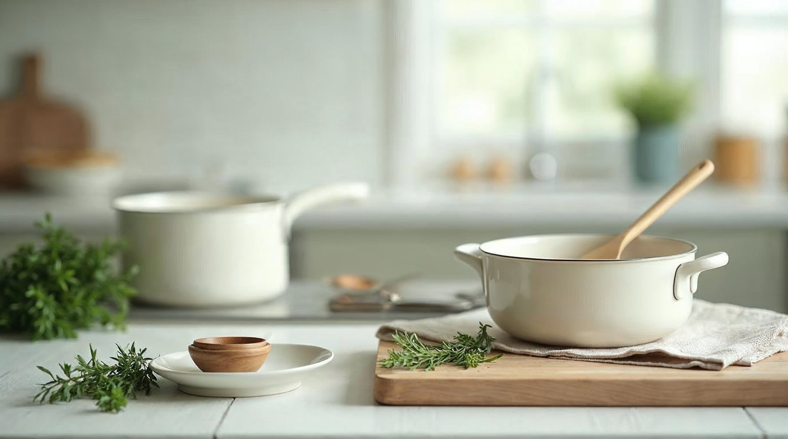
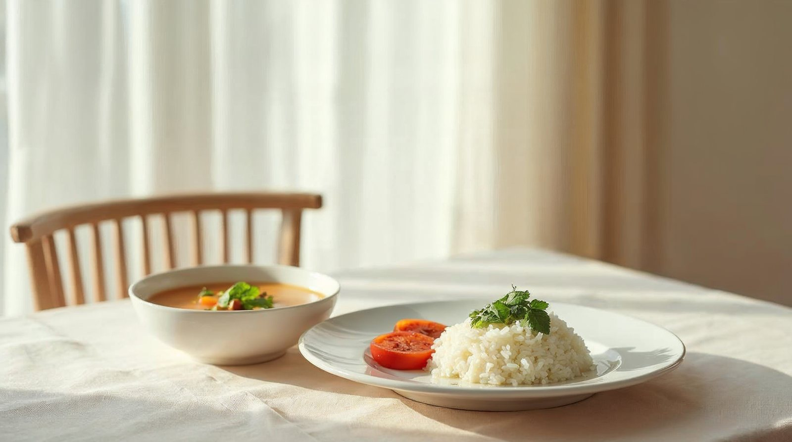
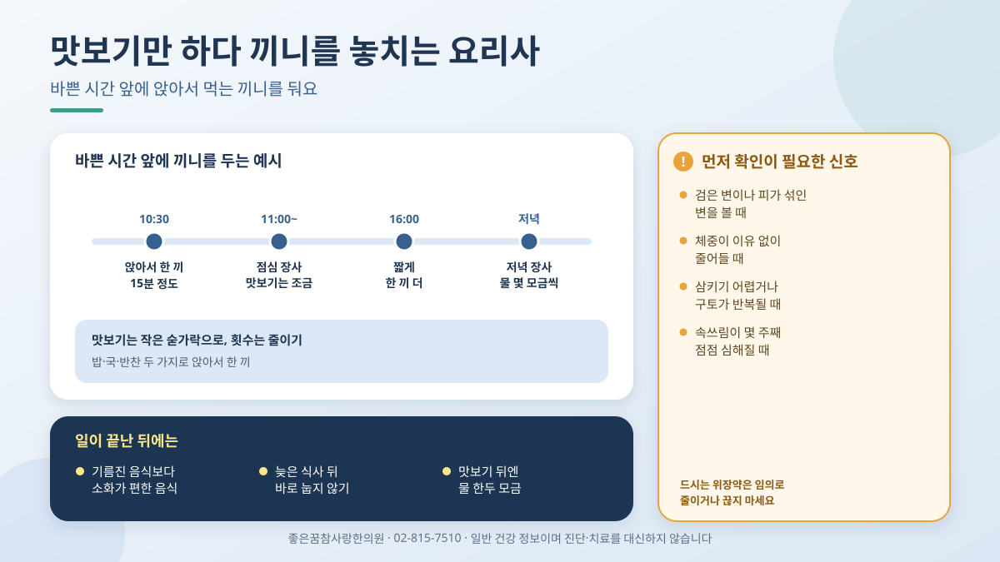

이종호 한의사 감수좋은꿈참사랑한의원 대표원장 (한의사 면허번호 19769)발행 2026-11-23 · 수정 2026-11-26
이 글의 차례
요리하는 분들은 하루 종일 음식 곁에 있지만 정작 앉아서 한 끼를 먹는 날은 드뭅니다. 맛보기로 조금씩 먹다 보면 배는 애매하게 부르고, 일이 끝나면 허기가 몰려옵니다. 이럴 때는 하루 먹는 시각과 양을 먼저 정리하는 것부터 시작합니다.
주방 일을 하는 분께 "오늘 무엇을 드셨어요?" 하고 여쭈면 잠시 생각하다가 "먹긴 많이 먹었는데 밥을 먹은 기억은 없네요"라고 답하시는 경우가 많습니다. 소스 한 숟가락, 국물 한 모금, 튀김 한 조각이 모이면 양은 적지 않은데, 몸은 끼니를 먹었다고 느끼지 못합니다.
그래서 저는 이 불편을 '덜 먹어서'나 '많이 먹어서'로 나누기보다, 먹는 리듬이 흩어져서 생기는 일로 봅니다. 맛보기가 하루 내내 이어지면 위가 쉬는 시간이 없고, 정작 일이 끝난 밤에는 참았던 허기가 한꺼번에 밀려옵니다. 이 흐름을 바로잡는 것이 첫걸음입니다.
주방은 시간이 손님에게 맞춰 흘러가는 곳입니다. 점심과 저녁 장사 사이 짧은 틈에는 재료 손질과 다음 준비가 기다리고 있어, 내 밥은 자꾸 뒤로 밀립니다. 그렇게 몇 달, 몇 년이 쌓이면 속이 불편한 것이 당연한 일처럼 느껴지기도 합니다.
하지만 바쁜 일정은 그대로 두고도 바꿀 수 있는 부분이 생각보다 많습니다. 끼니를 언제 둘지, 맛보기를 어떻게 줄일지, 마감 뒤 무엇을 먹을지를 하나씩 정리해 보면 속이 한결 편해졌다고 느끼는 분이 적지 않습니다.
왜 이런 불편이 생길 수 있나요
- 맛보기는 양과 시간이 들쭉날쭉해서 위가 규칙적으로 비고 차는 리듬을 잡기 어렵습니다.
- 바쁜 시간대에 서서 급하게 먹으면 덜 씹고 공기를 많이 삼켜 더부룩함이 생기기 쉽습니다.
- 덥고 습한 주방에서 오래 일하면 물을 마시는 때를 놓치는 경우가 있습니다.
- 일이 끝난 늦은 밤에 몰아 먹으면 잠자리까지 속이 무거울 수 있습니다.
- 간을 보는 음식은 대개 짜고 기름진 소스나 국물이라, 조금씩이라도 하루 내내 이어지면 속이 쉬 거북해지고 갈증도 잦아집니다.
- 불 앞의 열기와 바쁜 주문 사이를 오가며 긴장한 채 일하면 배가 고파도 허기를 잘 느끼지 못하다가, 긴장이 풀리는 순간 한꺼번에 몰려오기도 합니다.
맛보기로 버틴 날, 속이 보내는 신호는 어떻게 다른가요?
같은 '속이 불편하다'는 말 안에도 여러 모양이 있습니다. 어떤 모양인지 나눠 보면 무엇부터 손볼지가 분명해집니다.
- 일하는 내내 배가 애매하게 부르고 트림이 잦다면, 서서 조금씩 먹으며 공기를 함께 삼키는 쪽을 먼저 살핍니다.
- 명치가 쓰리고 신물이 올라온다면, 빈속에 짜고 기름진 음식이 자주 들어가는지, 늦은 식사 뒤 바로 눕는지를 살핍니다.
- 일이 끝날 무렵 손이 떨리고 기운이 쭉 빠지며 허기가 몰려온다면, 앉아서 먹는 끼니 사이가 너무 길지 않은지를 먼저 봅니다.
- 변이 묽어졌다 굳었다를 오간다면, 물을 마시는 양과 끼니 시각이 날마다 크게 달라지지 않는지를 함께 봅니다.
이 네 가지는 겹쳐 오는 경우가 많습니다. 어느 쪽이 더 자주인지만 적어 오셔도 진료실에서 이야기가 훨씬 구체적이 됩니다.
왜 맛보기를 많이 해도 끼니를 먹은 느낌이 들지 않을까요?
몸은 음식의 양만으로 식사를 알아차리지 않습니다. 앉아서 냄새를 맡고, 꼭꼭 씹고, 일정한 시간 동안 먹는 과정을 거치며 위와 장이 소화할 준비를 합니다. 서서 한 입씩 삼키는 맛보기에는 이 준비 과정이 빠져 있습니다.
게다가 맛보기는 대개 한 가지 음식을 아주 조금씩 먹는 일입니다. 짠맛, 단맛, 기름진 맛이 번갈아 들어오지만 밥처럼 든든한 곡류와 채소는 빠지기 쉽습니다. 그래서 입은 하루 종일 바쁜데 배 속은 허전하고, 일이 끝날 무렵 허기가 갑자기 커지는 것입니다.
한의학에서는 비위(脾胃), 곧 소화를 맡은 기운이 규칙적인 리듬 속에서 힘을 낸다고 봅니다. 때를 가리지 않고 조금씩 들어오는 음식은 이 리듬을 흐트러뜨리고, 밤늦은 과식은 쉬어야 할 시간에 일을 더 시키는 셈이 됩니다.
끼니 리듬 말고 다른 이유는 없을까요?
먹는 리듬을 바로잡아도 불편이 그대로라면 다른 이유를 함께 생각해 봅니다. 예를 들어 누우면 신물이 올라오고 목이 칼칼한 날이 많다면 역류 쪽을, 스트레스가 큰 날마다 배가 아프고 화장실을 자주 찾는다면 장의 예민함을 함께 살핍니다.
또 바쁜 주방에서는 진통제나 소화제를 습관처럼 드시는 분도 있습니다. 어떤 약을 얼마나 자주 드시는지에 따라 속의 모습이 달라질 수 있어, 첫 방문 때 함께 여쭙습니다. 검진에서 위내시경 이야기를 들은 적이 있다면 그 결과도 알려 주세요.

먼저 이렇게 여쭙니다
- 하루에 앉아서 먹는 끼니는 몇 번인가요?
- 맛보기나 간식은 대략 어느 정도 드시나요?
- 일이 끝난 뒤 늦은 시간에 많이 먹게 되나요?
- 물은 하루에 얼마나 드시나요?
- 속쓰림, 더부룩함, 변의 변화가 있나요?
- 출근해서 처음 입에 넣는 음식은 무엇이고, 몇 시쯤인가요?
- 쉬는 날에는 식사 시각과 속의 상태가 어떻게 달라지나요?
- 평소 드시는 소화제나 진통제가 있다면 얼마나 자주 드시나요?

일상에서 먼저 해 볼 수 있는 것
- 바쁜 시간 전에 10분이라도 앉아서 한 끼 먹기
- 맛보기는 작은 숟가락으로 정해 두고 횟수 줄이기
- 일하는 중간중간 물을 몇 모금씩 마시기
- 일이 끝난 뒤에는 기름진 음식보다 소화가 편한 음식으로 가볍게 먹기
- 늦은 식사 뒤에는 바로 눕지 말고 시간 여유 두기
예를 들어 점심 장사가 11시에 시작된다면 10시 반에 밥과 국, 반찬 두 가지로 15분 정도 앉아서 먹고, 저녁 장사 전 4시쯤 다시 짧게 한 끼를 먹는 식으로 바쁜 시간 앞에 끼니를 배치해 보세요. 맛보기는 그 사이에 작은 숟가락으로만 합니다.
앉아서 먹는 끼니는 '직원 식사'처럼 거창하지 않아도 괜찮습니다. 밥 반 공기와 국 한 그릇이라도 의자에 앉아, 휴대전화 대신 접시를 보며 먹는 것 자체가 몸에 '지금은 식사 시간'이라는 신호가 됩니다.
주방에서 물과 끼니를 챙기는 작은 요령
- 물병을 손이 닿는 곳에 두고, 주문 하나를 마칠 때마다 한 모금 마시는 식으로 일과 묶어 둡니다.
- 맛볼 때 쓰는 숟가락을 티스푼 크기로 바꾸면 한 번에 들어가는 양이 자연스럽게 줄어듭니다.
- 직원 식사가 있다면 가장 먼저 먹는 순번을 정해 두어, 바쁜 시간에 밀려 거르는 일이 없도록 합니다.
- 쉬는 날에도 첫 끼 시각을 근무일과 크게 다르지 않게 두면, 다음 출근일의 속이 덜 흔들린다는 분이 많습니다.
마감 뒤 늦은 식사는 이렇게 바꿔 봅니다
일이 끝난 밤의 한 끼는 하루 중 겨우 편히 앉는 시간이라 쉽게 줄이기 어렵습니다. 그래서 아예 굶기보다 모양을 바꾸는 쪽을 권합니다.
- 먼저 따뜻한 물이나 국물 몇 숟가락으로 속을 데운 뒤 먹기 시작합니다.
- 튀김이나 볶음보다 밥과 국, 두부나 달걀처럼 부드러운 반찬을 고릅니다.
- 접시를 하나 정해 그만큼만 담고, 다 먹은 뒤에는 자리에서 일어나 정리를 시작합니다.
- 술을 곁들이는 날은 요일을 정해 횟수부터 줄여 봅니다.
이렇게 바꾼 날과 그렇지 않은 날의 다음 날 아침 속을 비교해 적어 보면, 내 몸에 맞는 방법을 찾기가 한결 쉬워집니다.
상황별 예시
- 예를 들어 소스와 육수를 맡아 하루 수십 번 간을 보는 경우, 맛본 뒤 바로 삼키기보다 입을 물로 한 번 헹구는 날을 정해 두고, 그날 저녁 갈증과 속 쓰림이 달라지는지 비교해 봅니다.
- 예를 들어 브레이크 타임에도 다음 장사 준비로 앉을 틈이 없는 경우, 준비를 시작하기 전 첫 10분을 식사로 먼저 떼어 두고, 남은 시간에 준비를 몰아서 하는 순서로 바꿔 봅니다.
- 예를 들어 아침 일찍 출근해 첫 손님을 받을 때까지 커피 한 잔으로 버티는 경우, 출근 전 집에서 바나나나 삶은 달걀, 따뜻한 두유처럼 간단한 것이라도 먼저 먹고, 빈속에 마시던 커피는 첫 끼 뒤로 옮겨 봅니다.
- 예를 들어 마감 뒤 남은 음식으로 밤 11시에 배불리 먹고 바로 잠드는 경우, 양을 반으로 줄이고 따뜻한 국이나 죽 위주로 먹은 뒤, 씻고 정리하는 30분을 두고 눕는 것부터 시작합니다.
불 앞의 열기도 속에 영향을 주나요?
여름뿐 아니라 겨울에도 주방은 불과 증기로 덥고 습합니다. 땀을 많이 흘리면 입맛이 떨어지고 찬 음료가 당기는데, 찬 것을 한꺼번에 많이 마시면 속이 더 거북해졌다는 분이 많습니다.
땀을 많이 흘린 날은 미지근한 물을 조금씩 자주 마시고, 퇴근 뒤 찬 맥주나 얼음물로 한 번에 갈증을 풀기보다 따뜻한 차 한 잔으로 몸을 먼저 식혀 보세요. 땀을 흘린 정도와 속의 상태를 함께 적어 오시면 진료할 때 도움이 됩니다.
스스로 점검해 보세요
- 하루에 의자에 앉아 먹는 끼니가 한 번도 없는 날이 일주일에 사흘 이상이다.
- 맛보기와 주워 먹기를 합치면 끼니 한두 번 양은 된다고 느낀다.
- 일이 끝날 무렵 갑자기 허기가 몰려와 많이 먹게 된다.
- 근무 중 물을 마신 기억이 거의 없고, 퇴근 뒤 목이 몹시 마르다.
- 늦은 식사 뒤 바로 누워 아침에 속이 무겁거나 입이 쓰다.
- 쉬는 날에는 오히려 입맛이 없거나 끼니 시각이 크게 흐트러진다.
- 바쁜 날일수록 찬 음료를 한꺼번에 많이 마시고 나서 속이 거북하다.
- 소화제를 일주일에 몇 번씩 습관처럼 찾게 된다.

한의원에서 함께 살필 수 있는 경우
- 식후 더부룩함과 허기가 번갈아 오는 경우 식사 리듬과 소화 상태를 함께 살핍니다.
- 오래 서서 일한 뒤 속이 불편한 경우 몸의 긴장과 소화를 함께 살핍니다.
- 늦은 식사로 잠이 얕아지는 경우 저녁 리듬과 잠을 함께 살핍니다.
좋은꿈참사랑한의원에서는 하루 식사 흐름과 속이 불편한 때를 먼저 충분히 듣고, 진맥을 기본으로 하고 필요하다고 판단될 때 설진·복진을 더해 살핀 뒤, 상태에 맞춰 침이나 한약 상담 등을 정합니다. 귀가 전에는 근무 일정 안에서 지킬 수 있는 식사 순서를 함께 정리해 드립니다.
첫 방문에서는 주방의 하루를 시간 순서대로 여쭙습니다. 출근해서 처음 입에 넣는 것이 무엇인지, 바쁜 시간대가 언제인지, 마지막으로 앉아서 먹은 것이 언제인지를 들으면 속이 불편해지는 때와 겹치는 지점이 보이는 경우가 많습니다.
복용 중인 위장약이나 영양제가 있다면 이름을 알려 주세요. 한약 상담을 하게 되면 지금 드시는 약을 먼저 확인한 뒤 정하고, 드시던 약을 임의로 끊으시라고 말씀드리지 않습니다.
얼마나 지켜보고 언제 상담할까요
- 바쁜 시간 앞에 앉아서 먹는 끼니를 두고, 맛보기를 작은 숟가락으로 줄이는 것을 2주쯤 이어 가며 속이 불편했던 날을 적어 봅니다.
- 그래도 더부룩함이나 속쓰림이 일주일에 사흘 넘게 이어지거나, 쉬는 날에도 가라앉지 않는다면 상담을 받아 보세요.
이렇게 기록해 오시면 상담이 쉬워집니다
- 하루 동안 앉아서 먹은 끼니와 시각
- 맛보기와 간식의 대략적인 양
- 속쓰림, 더부룩함, 변의 변화가 있었던 날
- 복용 중인 위장약이나 영양제
기록은 길 필요가 없습니다. 휴대전화 메모에 "10:30 밥·국 / 맛보기 많음 / 밤 더부룩"처럼 한 줄씩 남겨 두시면 충분합니다.
한 주쯤 적어 보면 "맛보기가 많았던 날은 밤에 덜 먹었다"거나 "앉아서 먹은 날은 퇴근 뒤 허기가 덜했다"처럼 스스로도 흐름이 보이기 시작합니다. 작은 발견 하나가 다음 주의 식사 순서를 바꾸는 출발점이 됩니다. 그 발견을 진료실에서 함께 나누면, 근무 일정 안에서 무리 없이 지킬 수 있는 순서를 찾기가 쉬워집니다.
이런 증상은 먼저 확인이 필요합니다
- 피를 토하거나 검은 변, 피가 섞인 변을 보는 경우
- 체중이 이유 없이 줄어드는 경우
이런 신호가 있으면 한의원보다 가까운 병원이나 응급실을 먼저 찾으세요.
관련 글
- 미용 일로 점심을 거르거나 서서 급하게 먹을 때 속이 불편하면 어떻게 살피나요?
- 식사 뒤에 속이 더부룩한 것은 무엇 때문이고, 속쓰림과는 어떻게 다른가요?
- 칼질과 팬 흔들기, 무거운 냄비 들기가 이어지는 조리사·주방 일의 손목과 허리 통증은 어떻게 살피나요?

여쭙는 것
- 하루에 앉아서 먹는 끼니는 몇 번인가요?
- 맛보기나 간식은 대략 어느 정도 드시나요?
- 일이 끝난 뒤 늦은 시간에 많이 먹게 되나요?
생활에서 해 볼 것
- 바쁜 시간 전에 10분이라도 앉아서 한 끼 먹기
- 맛보기는 작은 숟가락으로 정해 두고 횟수 줄이기
- 일하는 중간중간 물을 몇 모금씩 마시기
한의원에서 함께 살필 것
- 식후 더부룩함과 허기가 번갈아 오는 경우 식사 리듬과 소화 상태를 함께 살핍니다.
- 오래 서서 일한 뒤 속이 불편한 경우 몸의 긴장과 소화를 함께 살핍니다.
- 늦은 식사로 잠이 얕아지는 경우 저녁 리듬과 잠을 함께 살핍니다.
먼저 확인이 필요한 신호
- 피를 토하거나 검은 변, 피가 섞인 변을 보는 경우
- 체중이 이유 없이 줄어드는 경우
한눈에 보는 표
| 구분 | 핵심 |
|---|---|
| 여쭙는 것 | 하루에 앉아서 먹는 끼니는 몇 번인가요? 맛보기나 간식은 대략 어느 정도 드시나요? |
| 생활에서 해 볼 것 | 바쁜 시간 전에 10분이라도 앉아서 한 끼 먹기 맛보기는 작은 숟가락으로 정해 두고 횟수 줄이기 |
| 한의원에서 함께 살필 것 | 식후 더부룩함과 허기가 번갈아 오는 경우 식사 리듬과 소화 상태를 함께 살핍니다. 오래 서서 일한 뒤 속이 불편한 경우 몸의 긴장과 소화를 함께 살핍니다. |
| 먼저 확인이 필요한 신호 | 피를 토하거나 검은 변, 피가 섞인 변을 보는 경우 체중이 이유 없이 줄어드는 경우 |
자주 묻는 질문
맛보기도 식사로 쳐도 되나요?
양과 시간이 들쭉날쭉해서 식사 리듬을 잡기 어렵습니다. 하루 한두 번은 앉아서 먹는 끼니를 정해 두기를 권합니다.
일 끝나고 먹는 늦은 식사는 어떻게 하나요?
양을 줄이고 기름진 음식과 술은 피하는 쪽이 잠과 다음 날 속에 부담이 덜합니다.
근무가 길어 평일에 오기 어렵습니다.
좋은꿈참사랑한의원은 토·일·공휴일에도 09:30~15:00(점심시간 없음)에 진료합니다. 평일은 09:30~20:00(점심 13:00~14:00)입니다.
손님 음식 간을 보느라 짠 것을 자주 먹게 돼요.
맛보기 뒤에는 물을 한두 모금 마시고, 앉아서 먹는 끼니에서는 국물을 조금 덜어 먹는 것부터 시작해 보세요.
좋은꿈참사랑한의원은 재진 때 지난번 이야기부터 이어서 여쭙니다. 진료시간과 예약은 오시는 길에서 확인하세요.
어디서 상담받을 수 있나요?
좋은꿈참사랑한의원은 서울 동작구 만양로2길 2 신성빌딩 3층·5층(서울 동작구 상도동, 7호선 상도역 3번 출구 근처)에 있습니다. 한의사 3명(이종호 대표원장, 조영기 수석진료원장, 정원영 진료원장)이 진료합니다. 진료시간은 평일 09:30~20:00(점심 13:00~14:00), 토·일·공휴일 09:30~15:00이며, 방문 전 전화로 확인을 권합니다. 예약은 네이버 예약, 카카오톡 상담, 전화 02-815-7510로 받습니다.
이 글은 일반적인 건강 정보이며 개인의 진단이나 치료를 대신하지 않습니다. 증상이 있거나 복용 중인 약이 있다면 진료를 통해 확인하세요. 치료 효과는 개인마다 다를 수 있습니다.
작성 기준: 일반적으로 알려져 있는 건강 정보를 참고해 정리했습니다(대표원장 감수). 증상 기록은 1~2주 동안 하루 1회, 비슷한 시간에 적어 오시면 지난 상태와 비교하기 쉽습니다.